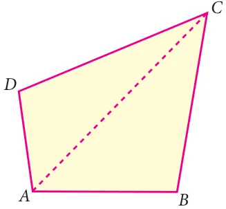
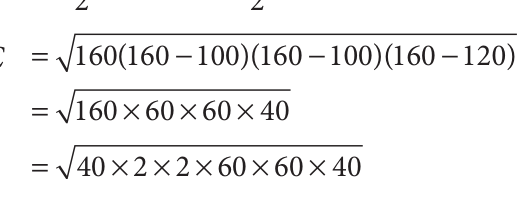

A plane figure bounded by four line segments is called a quadrilateral.
Let ABCD be a quadrilateral. To find the area of a quadrilateral, we divide the quadrilateral into two triangular parts and use Heron’s formula to calculate the area of the triangular parts.
In Fig 7.7, Fig. 7.7 Area of quadrilateral \(ABCD =\) Area of triangle \(ABC +\) Area of triangle ACD
A farmer has a field in the shape of a rhombus. The perimeter of the field is 400m and one of its diagonal is 120m. He wants to divide the field into two equal parts to grow two different types of vegetables. Find the area of the field.

Solution
Let ABCD be the rhombus.
Its perimeter \(= 4 \times\) side \(= 400 m\)
Therefore, each side of the rhombus \(= 100 m\)
Fig. 7.8
Given the length of the diagonal \(AC = 120 m\)
In \(\triangle ABC\), let \(a =100 m\), \(b =100 m\), \(c =120 m\)
\(= + + = + + = 160\)

Area of \(\triangle ABC =\)
\(= \times \times = 4800\)
Therefore, Area of the field \(ABCD = \times\) Area of \(ABC \triangle = \times 4800 = 9600 m\)

- 1.Using Heron’s formula, find the area of a triangle whose sides are
- (i)10 cm, 24 cm, 26 cm (ii) 1.8m, 8 m, 8.2 m
- 2.The sides of the triangular ground are 22 m, 120 m and 122 m. Find the area and
cost of levelling the ground at the rate of ₹ 20 per m .
- 3.The perimeter of a triangular plot is 600 m. If the sides are in the ratio 5:12:13, then
find the area of the plot.
- 4.Find the area of an equilateral triangle whose perimeter is 180 cm.
- 5.An advertisement board is in the form of an isosceles triangle with perimeter 36m
and each of the equal sides are 13 m. Find the cost of painting it at ₹ 17.50 per square metre.

- 6.Find the area of the unshaded region.